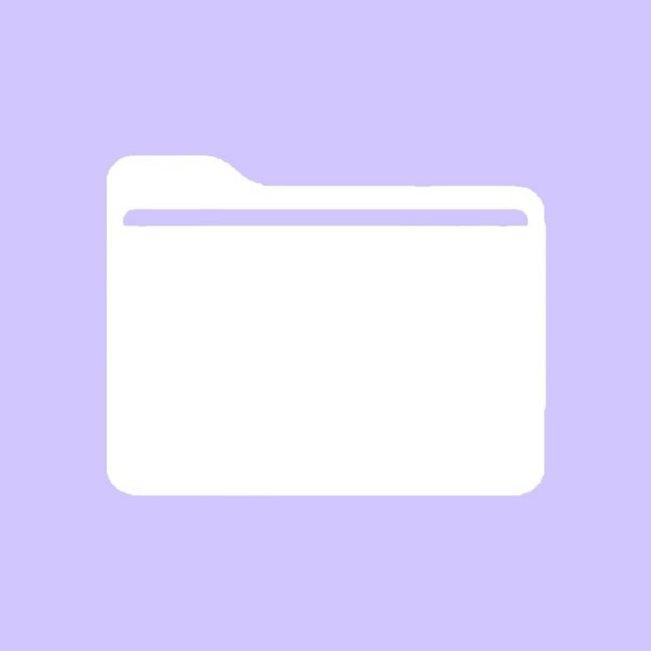
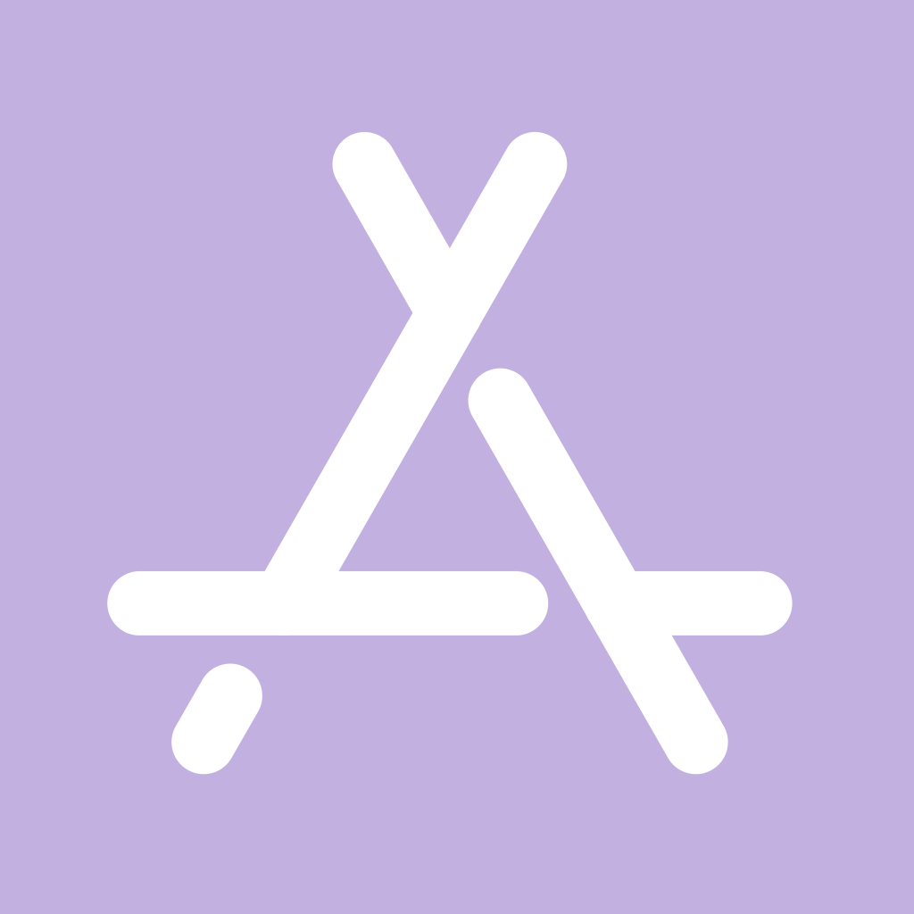
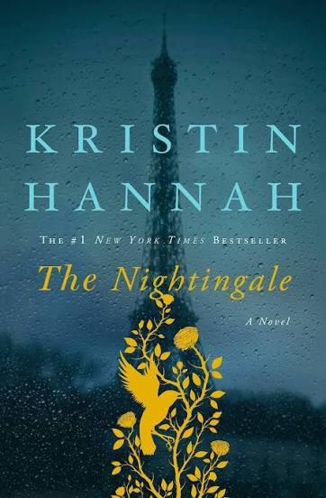
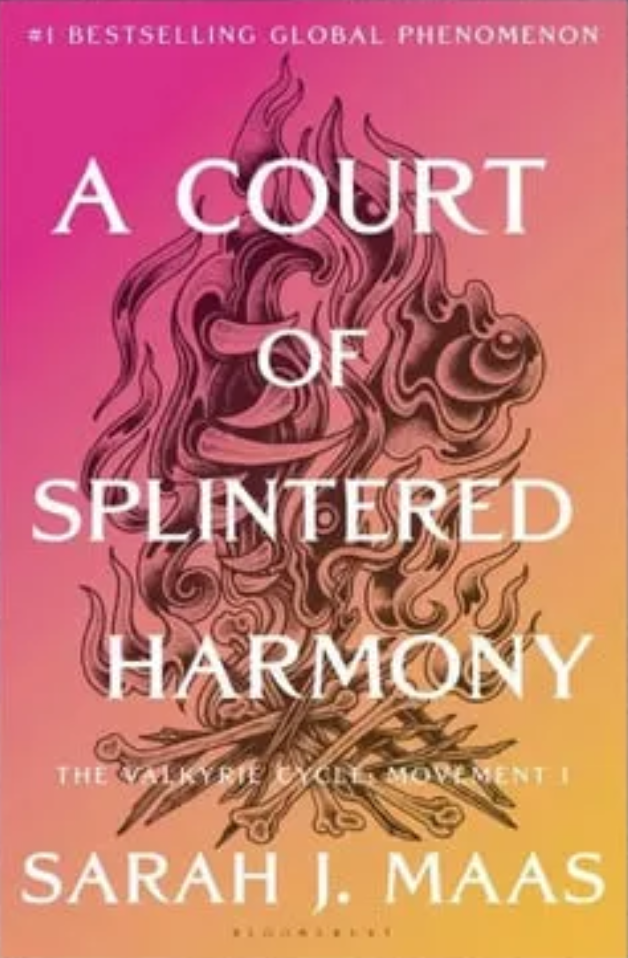
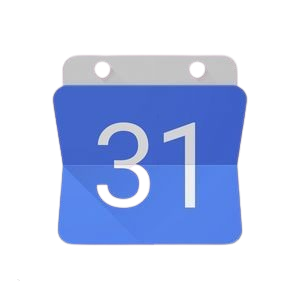
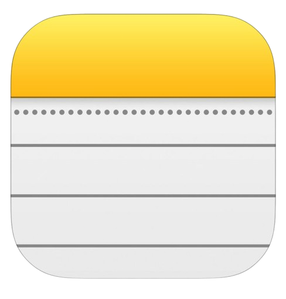

tanvi's os
time
trust the process
navis.exe
welcome to tanvi's os
hellooo! welcome to tanvi's personal operating system
brace yourself because this operating system contains a lot of information about tanvi...
a few helpful instructions:
you can explore the different apps by clicking on the icons in the bar below
you can close a window by clicking the pink circle on the top right corner
drag the title bar to move the window
click the quote on the top bar to change it to something new :D


about.exe
about tanvi
she's a bit shy so no picture of her today :(
but she generously granted permission to share some fun facts about her :D
she's 16 years old and a senior at high school
she enjoys learning to code, listening to certain songs on repeat, taking long walks, reading fictional books, and watching different kinds of tv shows
she's currently busy trying to keep up with school and college applications, build useful skills, and have a good time everyday
music.exe
music :D
she loooves listening to music
she says it feels like a good break from everything going on in life
tanvi's favorite music keeps evolving every few weeks
and she listens to this favorite music a lot one week and forgets about it the other *rolls eyes*
so here is a list of her current favorite songs curated by spotify's ai
- obsessed by mariah carey
- stupid song by olivia rodrigo
- young and beautiful by lana del rey
- on the floor by jennifer lopez and pitbull
- harleys in hawaii by katy perry
p.s click on the name of the song to watch the music video
books.exe
books!
one of tanvi's favorite things to do is just get lost in the world of fiction
she, unfortunately, went into a HUGE reading slump over the past couple of weeks
but, don't worry! she's trying to get back at it by reading some interesting books
never let me go
by Kazuo Ishiguro
dystopian, sci-fi, identity, mortality, love, nostalgia

nightingale
by Kristin Hannah
sisterhood, family bonds, morality, female heroism

a court of splintered harmony
by Sarah J. Maas
romance, fantasy, identity, political instability, trauma
photos.exe
pov: tanvi's gallery
whenever tanvi seems something "pretty" when she happens to be outside, she always takes a picture as a memory
she has always fancied photo dumps on instagram and just showing off the pictures to her friends and family
today, she has some of her favorite ones of display just for you! :)
coding.exe
code code code
so tanvi recently got into the magical and frustrating world of coding
she's still navigating through it and is at a beginner stage in her journey
but today, she decided to share some progress on her learning
so here is a list of the coding languages she's explored so far
python:
this is the first ever coding language which she learnt (and remembered)
she likes python because of its easy to learn syntax and would definitely recommend this to a beginner
she learnt it by watching videos on youtube, doing mini puzzles, and taking lessons through her school's programming club
java:
she started learning this a while after python and is currently in a class for it at her school
after a long time of only python, tanvi honestly found java syntax confusing, especially when stuff which aren't really there in python started showing up here
but she's excited to learn a new language!
c:
she tried out a few puzzles in c as part of an online course and never explored too much
after learning java, she found c's and java's syntax to be kind of similar
javascript:
she learned javascript first through a two week summer program on web development (funn)
the thing she likes about it is how it connects to web development -- something which she didn't experience with the other languages
she's not tooo good at it but definitely knows how to use the little syntax she learnt
html & css:
these aren't "programming" languages per se but she wanted to include them anyway...
she also learnt these languages in the same summer program she learnt javascript in and she has a LOT of fun with these
she loves trying out different kinds of html tags and goes crazy with all the stylistic things you can do with css
apps.exe
apps tanvi can't live without
okay so we all have things we can't live without in our lives
in the same way, tanvi uses a lot of apps daily, but there's some she can't live without (i'm sure you get how she feels here)
so let's look at a few *insert sparkle* amazing apps in her devices
notion:
this is honestly such a multipurpose app, she looovees it!
you can literally find so many great templates for a plethora of tasks and you can build something from scratch as well :))
she uses it to keep track of her subjects and assignments, notes, outfits, workout plans, and even her watchlist and reading list
it is a bit hard to get started with as there is a lot of information to take in...best thing to do is pick a template and go crazy
google calendar:
i think she would not have made it to any of her plans during junior year without google calendar
she uses it mainly to keep track of any events happening throughout the week or even later, and also uses it for reminders
the only reason this actually helps her remember things is because she has a huge widget of it on her phone so she has to look at it everyday
would definitely recommend this app (and the widget method)!!

spotify:
when i tell you she loves spotify, i mean she LOVES spotify
she actually can't go even half a day without listening to a song on it *tsk tsk tsk*
listening to the songs on this app is her way of temporarily escaping her surroundings and also focus on certain tasks
obviously, there are other music apps too but this was the one she first chose a while ago and stuck with it
notes:
the notes app on the iphone is in collaboration with google calendar for saving her life during junior year
i vividly remember all the bus rides and free periods where she tapped away on her notes about random things
the main reason she used it is that the app was conveniently on her phone whenever she needed it
most of the time she used it to quickly note down the tasks she had to do and organized them at a later time

brave:
not many people might have heard about this, but brave is a browser, just like google chrome or microsoft edge
this looks a lot like google chrome, so when she switched to this from chrome, she felt right at home (hey that rhymed!)
the reason she likes this browser is that it blocks any unnecessary cookies or extra advertisements on websites
and the best part? NO COMMERCIALS ON YOUTUBE!! (she got youtube premium for free)
credits.exe
stay connected!
here is a link to tanvi's linkedin profile
here is a link to tanvi's github account
this website was built in October 2026 with HTML, CSS, and JS